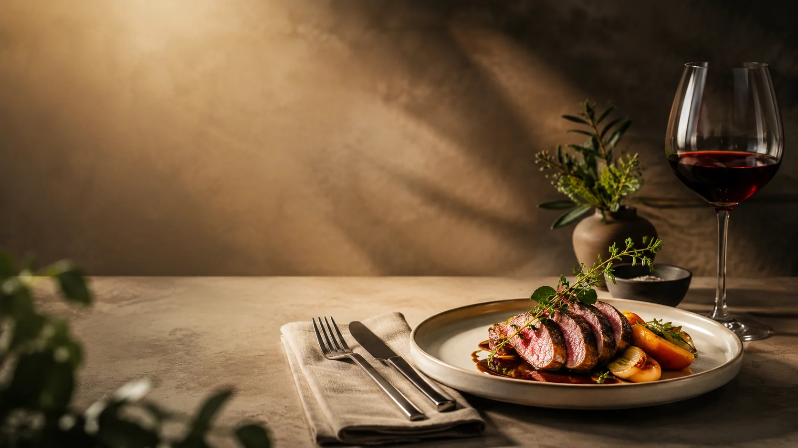

Geröstete Karotte
Miso, Haselnuss, Kräuteröl
Eine ruhige, luxuriöse Restaurant-Landingpage mit editorial Typografie, Menüstruktur und Reservierungsfokus.

Chef's Menu, Weinbegleitung und private Events.
Für Geburtstage, Firmenabende oder besondere Dinner — mit eigenem Menü und persönlicher Betreuung.
Demo-Formular mit lokaler Validierung und Bestätigung.